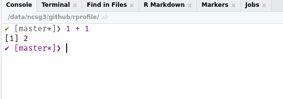
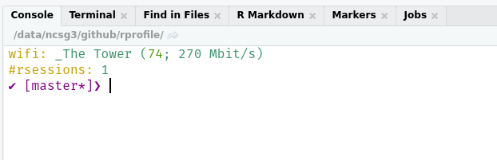
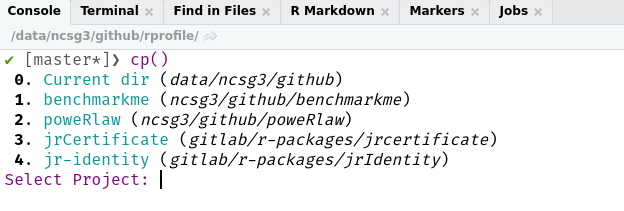

A package (of my) Rprofile customisations. The goal is it broaden the package to be of use to other people.
Installation
You can install the development version from GitHub with:
# install.packages("remotes")
remotes::install_github("csgillespie/rprofile")The package also uses two non-cran packages
# Used for nice prompts
remotes::install_github("gaborcsardi/prompt")
# Used for nice colours in the terminal
# Not for Windows
remotes::install_github("jalvesaq/colorout")R Prompt
The R prompt has also been customised (using the prompt package):
- If you are in a Git repo, the branch will be displayed.
- If R’s memory becomes large, the size will be displayed.
A distinction needs to be made between the RStudio Console and the terminal. The console already has lots of nice features, e.g. syntax highlighting. So I have two separated functions.

Useful Start-up Messages
Currently three start-up messages are displayed:
- The wifi network you are connected too with speed info (Linux only)
- The number of open R sessions (Linux only)
- RStudio Project info

Helper Functions
It’s always dangerous to load functions in your start-up script, so I’ve only included functions I’m fairly sure won’t be used in a script.
create_make_functions()- if you have aMakefilein your working directory, this will automatically generate all associated make functions. For example, if you have aforceargument in theMakefilethis will generatemake_force()lsos()- a handy function for listing large objectslibrary()- Over writes thelibrary()function with a smarter version. If a package is missing, automatically provides the option to install from CRAN or GitHublast_error()andlast_trace()- pre-loads from rlang. Nicer error investigation
RStudio functions
op(path = ".")- Creates & opens an RStudio project in the the directory specifiedcp()- Lists previous RStudio projects and gives an option to open.inf_mr()- Shortcut toxaringan::inf_mr().

Setting Better options()
The set_startup_options() function sets better (in my opinion) set of start-up options. These include
- Setting
Ncpusto run parallel installs by default - Removing significant stars
- Reduce the default print length
- Plus a few others
I’ve also created a convenience function for adding additional R repositories - set_repos(). Probably not needed by most people.
Example .Rprofile
Open your .Rprofile, e.g. file.edit("~/.Rprofile") and customise however you want. Here’s an example
# Set options for Rscript -e calls
if (requireNamespace("rprofile", quietly = TRUE)) {
# Call here if needed
# rprofile::set_repos()
rprofile::set_startup_options()
}
if (interactive() && requireNamespace("rprofile", quietly = TRUE)) {
rprofile::create_make_functions()
# Not RStudio OR RStudio console
if (rprofile::is_terminal()) {
rprofile::set_terminal()
} else {
rprofile::set_rstudio()
}
.env = rprofile::set_functions()
attach(.env)
# Display wifi and no of R sessions
# Linux only
rprofile::set_startup_info()
}
# Prints RStudio project on start-up
setHook("rstudio.sessionInit", function(newSession) {
active_rproj = rprofile::get_active_rproj()
if (!is.null(active_rproj)) {
message(glue::glue("{crayon::yellow('R-project:')} {active_rproj}"))
}
}, action = "append")Notes
The
lsos()function was taken from the SO question.The improved version of
library()was adapted from the autoinst. I did think about importing the package, but I had made too many personal tweaks.Setting the prompt uses the excellent prompt package.
I’ve probably “borrowed” some of the other ideas from blogposts and SO questions. If I’ve missed crediting you, please let me know and I’ll rectify it.
Other information
- If you have any suggestions or find bugs, please use the github issue tracker
- Feel free to submit pull requests